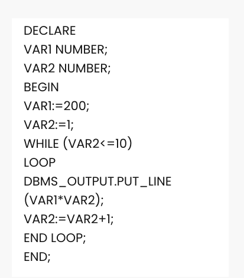
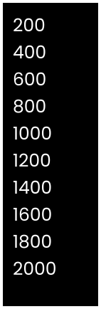

While Loop in PL/SQL
PL/SQL while loop is used when a set of statements has to be executed as long as a condition is true, the While loop is used. The condition is decided at the beginning of each iteration and continues until the condition becomes false.
Syntax of while loop:
WHILE <condition> LOOP statements; END LOOP;
Example of PL/SQL While Loop
After executing this , the output is
